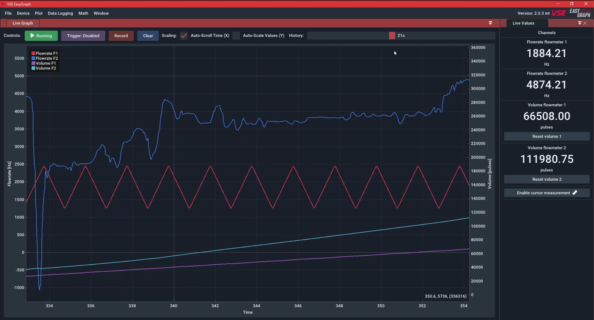
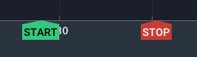

Getting Started#
Overview#
On the first software start you will be presented with the following screen:

- Live graph panel: This panel shows either the measured values streaming from a connected device or the measured values from a previously recorded file. The X-Axis shows the time since the value is measured. The rightmost value corresponds to the current value. The plot supports multiple channels which will be displayed in different colors. There are two Y-Axes (left/right) for seperating the flowrate and volume values on their own axis.
- Live value panel: This panel shows the current values as a text/number.
- Recordings panel: This panel lists all ongoing and finished recordings. You can open (double-click) and manage (right-click) them from here. It is usually hidden if no recordings are present.
The first step after opening the software is usually connecting to an external datalogging device. In order to do that, open the Device menu in the top menu bar and select the device type you want to connect. When first using this software, a license key must be provided. This will be explained in the next chapter.
Help: Panel is not visible
You can always make panels visible again using the Window menu in the top menu bar and checking the window that you want to re-enable.
Software Activation#
The activation procedure depends on the on the device you got the EasyGraph software with:
-
If you are using the software with a log.flow datalogger, the license is hardware-bound to the specific log.flow device and the serial number matching this device needs to be entered. The whole process works without an internet connection.
-
If you are using the software with any other hardware (e.g. IO.flow®, Evaluation units like A341, A350 or FU210, esi USB pressure sensors), an online license activation needs to be performed in order to use the software.
Log.flow Activation#
The following video shows how to enter the serial number key in order to activate the software. Multiple serial keys for different log.flow devices can be saved and managed. The dashes ( - ) in the serial key do not need to be entered.
Don't forget to verify that a checkmark is present after your entered key. Left-clicking on the key marks it as the main key that will be used upon device connection.
Online Activation#
Hint: Online-only
On each software start, the software requires an internet connection to verify the validity of the license key.
Supported Devices: IO.flow® with USB-Master, A341, A350, FU210, ESI-USB
After purchase you will receive an email with the license key. After entering this key into the software (see video below), you will be able to connect to all supported device types.
Using the device menu in the top bar you can also edit or remove the license key from the computer. This could be required if you have exceeded the activation limit and want to activate it on another pc.
The first recording#
Etablishing a connection#
In order to establish a device connection, make sure the device is connected properly to the computer and turned on. For help with this refer to the device specific connection instructions.

Open the Device menu in the top menu bar and select the device that you want to connect to. Use the Connect button to start the connection process which should be fully automatic (except for the Display/FU option where a COM-Port has to be selected). If this button is not available, you may have not entered a license key, as described in the previous chapter.

When the connection is established, the UI will respond to the connected device by showing the control bar above the plot panel. An active device connection is indicated by the green [ Running ] button. The currently measured values will be shown in the Live value panel and the Live graph panel.
Help: I only see zero values
Make sure you have powered your sensors with 24V and they output the right signal levels (HTL). If you use log.flow, refer to this section to get more info about powering your sensors.
Plot navigation#
Use your mouse to navigate the plot window. Refer to the following video:
Recording#
Starting a recording is as easy as pressing the record button.
You will also notice START and STOP indicators in the timeline and a new entry in the recordings panel in the bottom right corner.


To open the recorded data, double-click on the entry in the recordings panel. A new tab will appear on top of the live plot panel that starts with File: and the name of the recording. You can navigate this recording in the same way as the live plot.
It is important to note that in this state recordings are not saved to disk yet and stay in temporary RAM until you export them to a file. To export the file, decide between a full data export or a PDF output for printing.
-
For a full data export (that can be re-imported later) right-click on the entry in the recordings list and select
Save as.. -
For a PDF report, right-click on the entry in the recordings list and click
Export PDF...
After a successful export the icon will turn into a icon.